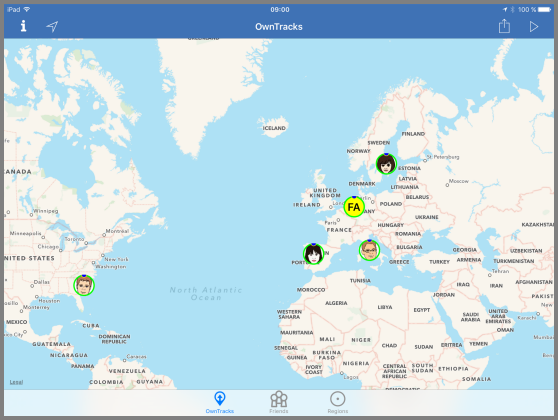

OwnTracks is an Open Source project which provides iOS and Android apps with which devices publish their current location to a server of your choice. While there are many smartphone apps available which can do that, OwnTracks is special in as much as you decide what happens to your data. To all of it.

Whether you want your young child to know where you currently are, you want to keep track of where you spent your last vacation, or you and a group of friends want to see each other on a map, OwnTracks can do that. It consists of an app which runs on your smartphone (iOS & Android), and which periodically, publishes a small chunk of data which other OwnTracks users you authorize may see. The big deal here is which you authorize: we are extremely picky about the security and more importantly the privacy of OwnTracks. To be quite clear, you also run the backend in order to ensure that only you and the people you authorize have access to the data published by the apps.
It might also be that you don't want to share your location data at all but desire a record of where you've been. That too is something OwnTracks can do for you.
From this point onwards, it gets a bit complicated, but we'll try and ease your way into the world of OwnTracks so you may enjoy it.
We think the best way to get started using OwnTracks is to follow this guide, chapter by chapter, but you certainly may fast-forward or even skip sections you're familiar with. Pressing Next on each page will guide you (pun!) through the guide.
We'll now move on to explain what OwnTracks does and how it works.